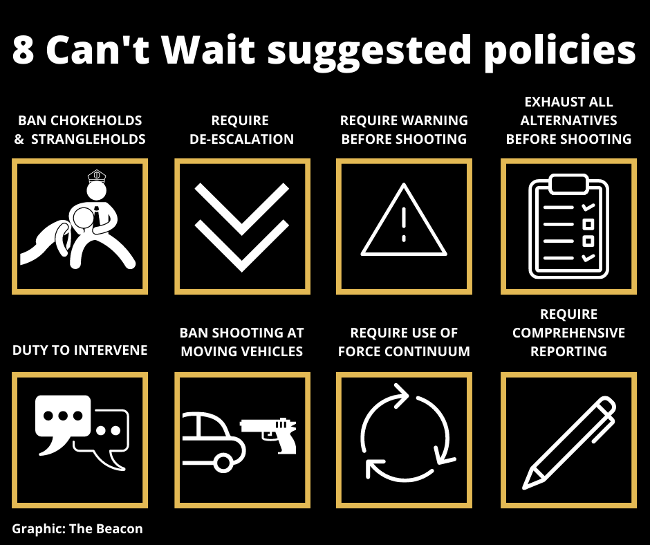
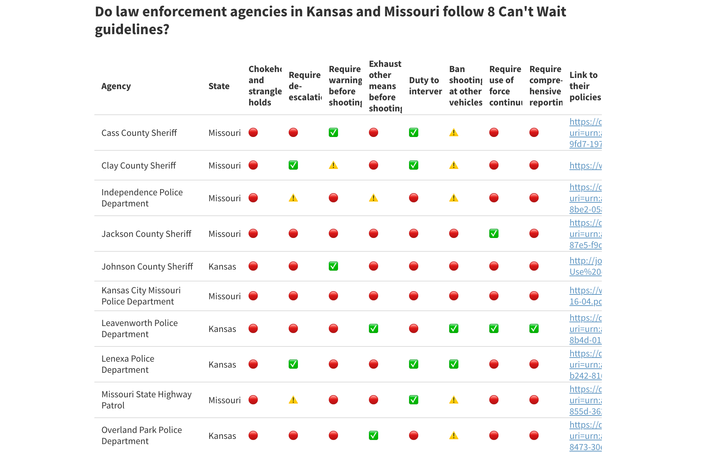
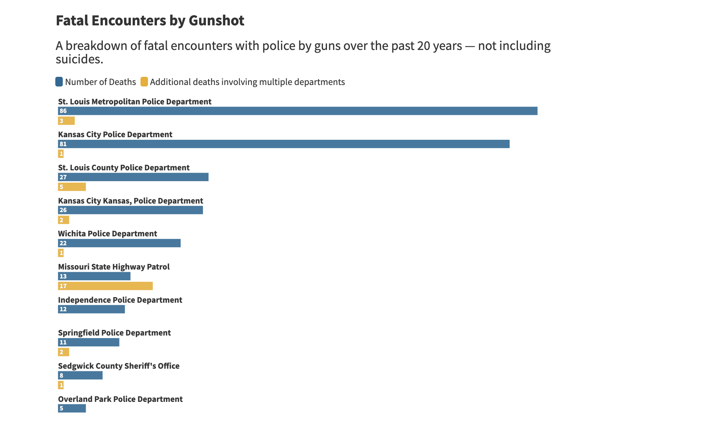
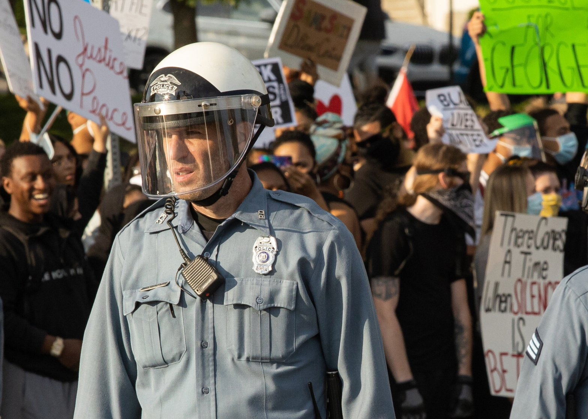

Wide-ranging policies give Kansas and Missouri cops discretion for violence
By Joseph Jungermann
July 22, 2020
UPDATE 07/29/2020: The Overland Park Police Department has changed its policy on shooting at a moving vehicle. The OPPD's new policy now states that "officers will not shoot at or from a moving vehicle unless someone inside the vehicle is using or threatening legal force against an officer or another person by means other than the vehicle itself. The only exception to this policy is in an apparent act of terrorism when the vehicle is being used as a weapon of mass destruction."
Like others across the U.S., thousands of Kansans and Missourians have protested police violence over the past two months, spurred by the May killing of George Floyd.
But Floyd's death was not an uncommon case.
Since 2015, nearly 1,000 people across the U.S. have been shot and killed by police each year (approximately three shootings per one million people), according to data from The Washington Post and KilledByPolice.net. And every year, roughly nine people in Kansas (17 shootings per million) and 25 people in Missouri (23 shootings per million) are killed by police.
"Officers have a lot of power; they can impact a person's entire life," said Justice Gatson, a Kansas City-based organizer with the American Civil Liberties Union of Missouri. "We need to make sure that we have officers who are going to be ethical."
Now, policy solutions to stop police killings are gaining more traction in local governments.
Launched in early June by the nonprofit police reform group Campaign Zero, a data-backed research platform called 8 Can't Wait outlines eight specific use-of-force policies to reduce the number of police killings:
Local adoption of these policies varies widely. An analysis by The Beacon of 16 police departments in Kansas and Missouri found:
- Two departments ban chokeholds and strangleholds.
- No departments fully implement all eight policies.
- Few officers in Kansas and Missouri have been charged and found guilty for killing civilians.
- A disproportionate number of Black people have been killed by police.
The Kansas City, Missouri, Police Department is the only law enforcement agency in the metro area that hasn't implemented any of 8 Can't Wait's recommended policies. Although it is not without a police killing, only one department in the metro — the Prairie Village Police Department — implements more than half of the recommended use-of-force policies. While it's a much smaller department, it is among the least violent departments in the metro area.
Campaign Zero's 2016 study, Examining the Role of Use of Force Policies in Ending Police Violence, argues that police departments that adopt all eight of its recommended policies would kill up to 72% fewer people on average than departments with no policies in place.
"We think of these policies as common sense, not commonplace," said DeRay Mckesson, a civil rights activist and co-founder of Campaign Zero. "This is a matter of what's fair and what's not fair, and what's right and what's not right."
The Data
The Beacon reached out to 17 law enforcement agencies and analyzed the use-of-force policies of 16 departments in Kansas and Missouri through a combination of research and open records requests. The Beacon is awaiting a response to a records request for use-of-force policies from the Kansas City, Kansas, Police Department that was sent June 26.
To confirm the policies listed on department websites, The Beacon contacted departments directly, multiple times. The Wichita Police Department and Shawnee Police Department confirmed their use-of-force policies, but said they are in the process of updating their procedures.
KCPD's public information officer, Capt. David Jackson, said in an email that the department's policies were last updated July 27, 2016.
"(The policies) undergo review periodically as needed by changes in law or tactics or every four years if not sooner," Jackson wrote.
The Beacon compared use-of-force policies from the police departments to fatal encounter data collected by former journalist D. Brian Burghart on his website: FatalEncounters.org. Burghart began collecting the data in 2012 because there was no national database available.
"Agencies go out of their way to prevent you from getting what you want, what you're legally allowed to have," Burghart told The Beacon. “Agencies are afraid they're going to be telling stories about themselves."
Since 2000, the KCPD ranks second in the raw number of police shootings, behind the St. Louis Metropolitan Police Department, out of every police and law enforcement agency in Missouri and Kansas, according to the Fatal Encounters data.
The KCPD is notably among the largest law enforcement agencies in Missouri and Kansas, employing about 1,400 full-time law enforcement employees, according to the department's latest adopted budget. The department oversees a population of about 495,000 - a rate of 28 officers per 10,000 residents. By comparison, the St. Louis Police Department employs about 1,300 police officers for a city of about 300,000 - a rate of 43 officers per 10,000 residents.
KCPD's Jackson said via email that he was not aware of police shooting data or rankings. When asked about what the department has done to try to limit its number of fatal shooting encounters, Jackson said, "We have taught de-escalation and other crisis intervention and tactical communication techniques since I went to the academy in 1999."
The KCPD lists "strategic re-deployment" as a de-escalation technique to disengage and reevaluate situations and "resolving the incident with the lowest potential of injury or death to the general public, law enforcement officers and suspected criminals."
But strategic re-deployment for de-escalating situations is not explicitly required in the department’s current response to resistance procedures.
Chokeholds & Strangleholds
At KCPD's June Board of Police Commissioners meeting, Maj. Gregory Dull addressed the 8 Can't Wait solutions, but stopped short of committing to outright bans of techniques like chokeholds and strangleholds.
"We do not teach it (chokeholds) or authorize it," he said during the meeting. "It's not specifically banned in our policy and, like I said, we're welcome to - open to - adding that specific ban in our policy."
Instead, the KCPD teaches the lateral vascular neck restraint method, which was implemented by the department in 1970. The hold is not considered a chokehold because it does not put pressure on the front of the neck, but instead compresses the side of the neck where the carotid artery is located to restrict blood flow to the brain and render someone unconscious.
The National Law Enforcement Training Center says no deaths or serious injuries have resulted from using that method in the past 43 years. In one local case in July 2006, 43-year-old Christopher Henley reportedly died of cardiac arrest after a KCPD officer tried to restrain him by putting his arm around Henley's neck.
"Any time you are purposely putting pressure where there's going to be some type of restriction with the airway, you're potentially putting somebody at risk and in danger," said Gatson with the ACLU of Missouri.
Ultimately, an autopsy report from Jackson County Medical Examiner Thomas Gill ruled that Henley's death was due to an overdose of narcotics. It is unclear whether the officer's use of force on Henley's neck contributed to his death.
"That hold is no better than the other," Gatson said, referring to the lateral vascular neck restraint technique. "We should not be using chokeholds; officers should get trained just like mental health experts are trained in restraint."
Two of the 16 departments in The Beacon's analysis of local policies - the Prairie Village Police Department and St. Louis County Police Department - ban of chokeholds in their policies.
Firearm Policies
The Overland Park Police Department amended its response to resistance procedures early last year, most notably the policy on shooting at moving vehicles.
The change came a year after the killing of 17-year-old John Albers in 2018, when an officer fired 13 bullets into the unarmed teenager's vehicle. The officer was recently given a $70,000 severance from the department.
Overland Park police officers can no longer fire into moving vehicles unless "a reasonable officer could infer the vehicle is operated in a manner deliberately intended to strike an officer or citizen and all other reasonable means of defense (including moving out of the path of the vehicle), have been exhausted," according to the updated procedures.
KCPD policies do not appear to ban shooting at moving vehicles. It is also one of nine law enforcement agencies in The Beacon's analysis that do not explicitly require officers to exhaust all alternatives before using a firearm, despite KCPD leading the metro area in fatal police shootings.
As for the policy of requiring a warning before shooting, KCPD's Dull dismissed that suggestion at the police commissioners meeting.
"We would respectfully disagree with making it an absolute requirement for all situations," Dull told the board, saying that when dealing with certain situations like active shooters, officers are sometimes forced to make split-second decisions, and delaying reaction time could increase danger to civilians and officers.
Comprehensive Reporting
The 8 Can't Wait campaign also calls for comprehensive reporting, meaning officers would have to file a report every time they draw their weapon at a person - even if it is not fired. The KCPD does not require comprehensive reporting.
Advocates argue that comprehensive reporting could lead to fewer police shootings.
Since 2000, no on-duty officers in Kansas or Missouri have been found guilty of a crime related to civilian deaths, according to a Beacon analysis of the Fatal Encounters data.
Out of the 146 fatal shooting encounters in Kansas in that time period, two off-duty officers were found guilty. Similarly, out of the 428 fatal shooting encounters in Missouri over the past 20 years, one off-duty officer was found guilty, according to a Beacon analysis of the Fatal Encounters data.
Gatson argues that qualified immunity is the reason for few charges and ultimately, few guilty verdicts for police.
Qualified immunity grants broad protection to government workers, including police officers, from being held liable for actions like excessive force — and requires any actions of misconduct by an officer to be explicitly defined in previous law for a conviction to be possible.
"(It) has given officers cover to operate in these egregious ways without accountability," Gatson said.
In June, the Supreme Court refused to reexamine the legal doctrine of qualified immunity.
When asked about the court's decision and activists’ arguments against qualified immunity, KCPD's Jackson stated: "We enforce the laws as they are passed by law makers and under the guidelines upheld by the Supreme Court."
Stricter Policies
The fatal encounter police data exposes what has been a critical driving point behind Black Lives Matter protests for stricter use-of-force policies: that Black people are disproportionately affected by police violence.
According to a Beacon analysis of the Fatal Encounters data, since 2000, Black people in Missouri and Kansas accounted for 45.8% and 22.2%, respectively, of the shooting deaths by police where race was defined. Meanwhile, Black people represent 11.8% of the population in Missouri and 6.1% of the population in Kansas, per the Census Bureau's 2019 population estimate.
Gwendolyn Grant, president of the Urban League of Greater Kansas City, said she was dismayed that the KCPD ranks among the top police departments to kill black men, according to the site MappingPoliceViolence.org.
"Crime is not going to go down when you keep filling streets with police officers who are abusive and who have no respect for the humanity of Black people," Grant said.
Grant and local activists have called for sweeping reforms across the KCPD, including the resignation of Police Chief Rick Smith.
"Chief Smith continues to serve his community,” said Jackson in an emailed statement. “We understand some have called for his job; he has also received numerous supportive encouraging messages."
Activists have also called for local control of the department.
"Kansas City is the only city in the country that does not control its police department, but we fund the police department," Grant said.
"The Board of Police Commissioners is appointed by the governor, and they have consistently conducted themselves as if they were appointed to protect and serve the chief and the blue line, as opposed to working on behalf of the citizens of Kansas City to protect and serve the community."